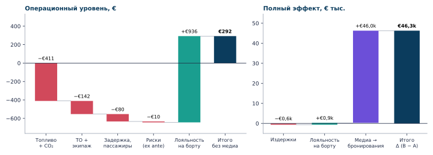
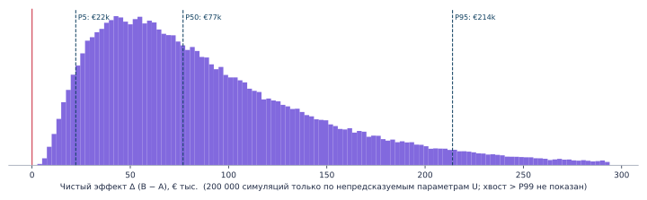
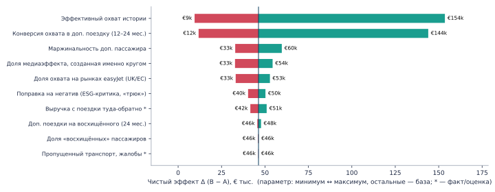
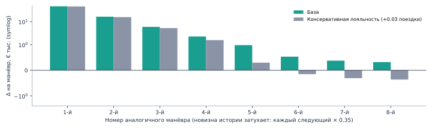

Вечером 27.02.2023, во время сильной геомагнитной бури, капитан рейса EZY1806 приглушил свет в салоне. Сияние сначала видел только левый борт. Через 2–3 минуты капитан сделал круг 360° к западу от Фарерских островов на высоте 37 000 ft (≈ 20:30 GMT, примерно через полчаса после вылета). Манёвр занял «чуть меньше 10 минут» и виден на треке Flightradar24. easyJet назвал его «контролируемым манёвром». Готового публичного расчёта P&L по кейсу нет — дельту собираем сами.
| Дата | Кто | Маршрут | Что сделали | Для расчёта |
|---|---|---|---|---|
| 27.02.2023 | easyJet EZY1806, A320 | KEF → MAN | Круг 360° на FL370, < 10 мин | Базовый кейс |
| Та же неделя | Finnair | Куусамо → Хельсинки | Внеплановый круг 360°, чтобы сияние увидели оба борта | Практика повторяется |
| 02.2023 | easyJet × Aerobility | Благотворительный рейс | Плановый рейс за сиянием | Перевозчик сам использует тему |
| 2018–2023 | Omega Breaks | UK → Шетланды → UK, ≈ 3 ч | Чартеры за сиянием, £229–280 с человека | Готовность платить |
Почему контроль — тот же рейс, а не рейс за пару дней до этого. У рейса другого дня свой ветер, свой маршрут и своя загрузка. Из-за этого время в воздухе на маршруте ≈ 2 ч 15 мин гуляет на ±10–20 минут — больше, чем сам эффект (9,5 мин). Прямое вычитание утонуло бы в шуме. Поэтому рейсы соседних дней служат для сверки, а саму дельту берём по треку: круг на FL370 длительностью ≈ 9,5 мин. Физика это подтверждает: при скорости ≈ 450 уз и крене 15° радиус разворота ≈ 20 км, круг ≈ 9,2 мин.
Три вида вводных: факт — факт на дату рейса (цена топлива и CO₂, загрузка, длительность манёвра, отсутствие задержки и инцидентов); оценка — инженерная или отраслевая оценка с узким допуском; МК — принципиально непредсказуемое (медиа, поведение пассажиров). Операционный блок считается детерминированно, с допуском. Монте-Карло — только для параметров вида МК.
| Что известно точно | Значение | Источник |
|---|---|---|
| Рейс, маршрут, время | EZY1806 (U21806), KEF → MAN, вылет ≈ 20:00 GMT, круг ≈ 20:30 | PA Media, FR24 |
| Самолёт | Airbus A320; бортовой номер не подтверждён, поэтому neo (186 кресел) и ceo (180) взяты в допуск | FR24 |
| Манёвр | Круг 360°, FL370, к западу от Фарер, «чуть меньше 10 мин» | FR24, PA Media |
| Пассажиры | Загрузка easyJet в янв–мар 2023 = 88% → ≈ 164 человек | easyJet Q2 FY23 trading update |
| Цена керосина | ≈ $105/bbl ≈ $827/т ≈ €781/т (EUR/USD 1,06) | IATA/Platts через Cargo Facts |
| Цена квоты EU ETS | ≈ €96/т (€98,3 на 20.02.2023, рекорд €99,99) | GMK Center, ICE |
| Дистанция и EU261 | KEF–MAN ≈ 1 660 км → категория €400; задержки ≥ 3 ч не было | Регламент 261/2004 |
| Блок | Эффект | Знак | Как учтён | Δ |
|---|---|---|---|---|
| Операционные | Дополнительное топливо | − | 379 кг × €781/т (цена 02.2023) | −€296 |
| Операционные | Квоты CO₂ (EU ETS) | − | 1,20 т × €96/т | −€115 |
| Операционные | Техобслуживание (PBH) | − | Начисляется за лётные часы | −€111 |
| Операционные | Оплата экипажа | − | Переменная часть, +9,5 мин | −€32 |
| Операционные | Аэронавигационные сборы | 0 | Сбор считается по ортодромии, круг его не меняет | €0 |
| Операционные | Аэропортовые сборы MAN | 0 | Зависят от MTOW и числа пассажиров; прилёт до ночного периода | €0 |
| Операционные | Лизинг / владение ВС | 0 | Фиксированный платёж | €0 |
| Операционные | Каскадные задержки следующих рейсов | 0 | Последний рейс дня, ночёвка в MAN | €0 |
| Операционные | Рабочее время экипажа (FTL) | 0 | +10 мин к смене ≈ 5 ч; лимиты не задеты | €0 |
| Операционные | Наземное обслуживание | − | Сверхурочные хендлинга | −€30 |
| Операционные | Продажи на борту | ± | Пауза в сервисе против +10 мин полёта, нетто ≈ 0 | ≈ €0 |
| Пассажиры | Компенсации EU/UK261 | 0 | Ex post задержки ≥ 3 ч не было | €0 |
| Пассажиры | Пропущенный транспорт, жалобы | − | Поздний прилёт ≈ 22:30 | −€50 |
| Пассажиры | Недовольные: спали, аэрофобия, укачивание | − | 7% × 0,05 потерянной поездки | −€40 |
| Пассажиры | Лояльность восхищённых: повторные покупки | + | 85% × 0,10 доп. поездки × €70 маржи | €976 |
| Бренд | Публикации в СМИ → новые бронирования | + | Охват × конверсия × маржа (МК) | €50 тыс. |
| Бренд | Сарафанное радио, посты пассажиров | + | Входит в охват истории | в медиа |
| Бренд | Спрос на Исландию, пакеты easyJet holidays | + | Входит в конверсию | в медиа |
| Бренд | Бренд работодателя: гордость экипажей, найм | + | Не монетизируем | качеств. |
| Бренд | Контент для маркетинга (фото и видео пассажиров) | + | Не монетизируем | качеств. |
| Риски | ESG-критика, «трюк ради лайков» | − | Поправка 0,92 к медиаэффекту | −€3 998 |
| Риски | Безопасность: крен, пассажиры встают к окнам | − | Ex ante EV; ex post — €0 | −€10 |
| Риски | Расход резерва топлива → риск ухода на запасной | − | Входит в EV; манёвр больше 5% резерва | в EV |
| Риски | Регулятор / УВД | 0 | Манёвр согласован, «controlled manoeuvre» | €0 |
| Риски | Прецедент: пилоты начнут «катать» без правил | − | Вне дельты одного рейса, см. раздел 7 | раздел 7 |
| Риски | Конкуренты копируют, новизна падает | − | Затухание медиаэффекта, раздел 7 | раздел 7 |
| Вне P&L | Климат сверх цены ETS + ночные инверсионные следы | − | 1,20 т × (€200 соц. цена − €96) | −€124 |
| Вне P&L | Ценность впечатления для пассажиров | + | Готовность платить за полёты к сиянию, €20–40 на человека | €3–7 тыс. |
| Стратегия | Опцион: продукт «рейсы за сиянием» | + | £229–280 × 180 кресел за рейс ≈ 3 блок-часа | £40–50 тыс./рейс |
| Параметр | Вид | Ед. | Мин | База | Макс | Источник / логика |
|---|---|---|---|---|---|---|
| Длительность круга 360° | факт | мин | 9 | 9,5 | 10 | Трек FR24, PA Media: «чуть меньше 10 минут»; физика: крен 15° → 9,2 мин |
| Расход топлива A320 на FL370 | оценка | кг/ч | 2 150 | 2 300 | 2 450 | A320neo ≈ 2,15 т/ч … A320ceo ≈ 2,45 т/ч (бортовой номер на 27.02 не подтверждён) |
| Надбавка расхода в крене 15–20° | оценка | × | 1,02 | 1,04 | 1,06 | n = 1/cos φ; индуктивное сопр. ∝ n² |
| Цена Jet A-1, февраль 2023 | факт | €/т | 758 | 781 | 859 | IATA/Platts: $2,55/gal (нед. до 17.02) ≈ $107/bbl; $2,43/gal (сер. марта); макс. — +10% into-plane KEF |
| Квота EU ETS, конец февраля 2023 | факт | €/т CO₂ | 93 | 96 | 100 | EUA Dec-23: €98,3 (20.02.2023), рекорд €99,99; рейс ЕЭЗ→UK в EU ETS |
| Техобслуживание (двигатели PBH + планер) | оценка | €/лётн. ч | 500 | 700 | 900 | Отраслевая оценка для A320 |
| Переменная оплата экипажа (2 + 4) | оценка | €/лётн. ч | 0 | 200 | 400 | Оплата в основном оклад + посекторные доплаты → +10 мин почти бесплатны |
| Наземные расходы позднего прилёта | оценка | € | 0 | 30 | 100 | Прилёт ≈ 22:30; смена хендлинга и так на месте |
| Пропущенный транспорт, жалобы | оценка | € | 0 | 50 | 200 | Последние поезда из MAN ходят до ≈ полуночи |
| Вероятность пересечь порог 3 ч (EU/UK261) | факт | вер. | 0,00% | 0,00% | 0,05% | Ex post: задержки ≥ 3 ч не было → 0; ex ante — до 0,05% |
| Ожид. потери: безопасность и регуляторика | оценка | € | 0 | 10 | 100 | Ex post: инцидентов нет; ex ante: вероятность × ущерб, разрешение УВД получено |
| Пассажиров на борту | факт | чел. | 158 | 164 | 168 | Загрузка easyJet янв–мар 2023 = 88% × 186 (neo) / 180 (ceo) кресел |
| Выручка с поездки туда-обратно | оценка | € | 180 | 200 | 220 | ≈ €100 на пассажиро-сегмент с допуслугами (easyJet FY23–24) |
| Доля «восхищённых» пассажиров | МК | доля | 60% | 85% | 95% | Отзывы и посты пассажиров; без опроса |
| Доп. поездки на восхищённого (24 мес.) | МК | поездок/чел. | 0,0 | 0,1 | 0,2 | Эффект «пик–конец», рост NPS; прямых данных нет |
| Доля недовольных (спали, аэрофобия, транспорт) | МК | доля | 2% | 7% | 15% | Оценка |
| Маржинальность доп. пассажира | МК | доля | 25% | 35% | 45% | За вычетом сборов, дистрибуции, вытеснения |
| Эффективный охват истории | МК | чел. | 3 млн | 15 млн | 50 млн | Синдикация PA, Sky News, ITV, LBC, Yahoo, соцсети, СМИ NZ/US/LatAm |
| Доля охвата на рынках easyJet (UK/ЕС) | МК | доля | 50% | 70% | 80% | Оценка по географии СМИ |
| Доля медиаэффекта, созданная именно кругом | МК | доля | 60% | 85% | 100% | Во вселенной A левый борт всё равно видел сияние |
| Конверсия охвата в доп. поездку (12–24 мес.) | МК | доля | 0,002% | 0,008% | 0,025% | Калибровка: окупаемость как у платного медиа, ≈ 2× при CPM €8 |
| Поправка на негатив (ESG-критика, «трюк») | МК | × | 0,80 | 0,92 | 1,00 | Оценка по тону публикаций |
Константы: 3,16 кг CO₂ на кг керосина (ICAO); компенсация EU261 — €400; претензию подают 50% пассажиров; недовольный пассажир теряет 0,05 поездки; 7,88 bbl в тонне Jet A-1. Пессимистичный сценарий — все издержки на максимуме, все выгоды на минимуме; оптимистичный — наоборот.
| Статья | Расчёт | Δ |
|---|---|---|
| Топливо | 2 300 кг/ч × 0,158 ч × 1,04 (крен) = 379 кг × €781/т | −€296 |
| CO₂ (EU ETS) | 379 кг × 3,16 = 1,20 т × €96/т. Рейс ЕЭЗ → UK входит в EU ETS; бесплатные квоты фиксированы и предельную стоимость не меняют | −€115 |
| Техобслуживание | €700/лётн. ч × 0,158 ч: PBH двигателей и планера начисляются за лётные часы | −€111 |
| Экипаж | €200/ч × 0,158 ч: оплата в основном оклад + посекторные доплаты | −€32 |
| Наземные расходы | Прилёт ≈ 22:30; смена хендлинга и так на месте | −€30 |
| Пассажиры: транспорт, жалобы | Пропущенные поздние поезда и такси, обработка жалоб | −€50 |
| Риск EU/UK261 | Ex post: задержки ≥ 3 ч не было → €0 | €0 |
| Безопасность и регуляторика (EV) | Ex post инцидентов не было; ex ante — вероятность × ущерб. Разрешение УВД было | −€10 |
| Аэронавигационные сборы | Сбор считается по ортодромии между точками входа и выхода из зоны, круг его не меняет | €0 |
| Лизинг, каскад задержек | Лизинг — фиксированный платёж. Самолёт ночует в MAN, следующий вылет утром | €0 |
| Итого издержки | Допуск €421 … €1 141; ≈ 3,9% выручки рейса (≈ €16 тыс.) | −€643 |
Для сравнения: если бы такой круг случился сегодня (керосин 2026 ≈ $152/bbl, EUA ≈ €80), издержки составили бы ≈ €723.
Сверка с готовностью платить: за ≈ 3 часа поиска сияния в небе люди платят £229–280. Значит, гарантированные 10 минут сияния стоят для пассажира порядка €20–40, а на весь рейс это «подарок» на €3–7 тыс. В P&L мы засчитываем только ту часть (≈ 15–30%), что вернётся повторными покупками.
Конверсия 1 к 12 500 откалибрована так, чтобы окупаемость совпадала с платной рекламой: CPM €8 и ROI ≈ 2×. Справочно: «медийная стоимость» (охват × CPM) — €120 тыс., AVE по аудитории изданий — порядка €1 млн. Эти показатели завышают эффект, поэтому в P&L идёт только маржа с дополнительных поездок.
| Риск | Механизм | Ex post | Как снизить |
|---|---|---|---|
| Безопасность в салоне | Пассажиры встают к окнам во время крена; турбулентность | Не было | Табло «пристегнуть ремни», крен ≤ 25° |
| Топливо | Круг ≈ 0,38 т — больше 5% резерва на непредвиденное (≈ 0,26 т) | Не было | Только при запасе топлива сверх плана; финальный и запасной резервы не трогать |
| Регулятор / УВД | Нужно разрешение на эшелоне | Получено | Только с разрешения, в малозагруженном воздушном пространстве |
| Задержка / EU261 | +10 мин могут перевести рейс через порог 3 ч или сломать стыковки | Не было | Не делать при задержке > 60 мин |
| Репутация / ESG | +1,20 т CO₂ ради «аттракциона» | Тон позитивный | Поправка 0,8–1,0 к медиаэффекту |
| Прецедент | Рутинный манёвр: издержки остаются, новизна исчезает | — | Регламент, раздел 7 |

| Блок P&L | Пессимистичный | Базовый | Оптимистичный |
|---|---|---|---|
| Издержки манёвра | −€1 141 | −€643 | −€421 |
| Лояльность пассажиров на борту | €75 | €936 | €3 933 |
| Медиа → новые бронирования | €648 | €46 тыс. | €990 тыс. |
| Чистый эффект Δ (B − A) | −€418 | €46 тыс. | €994 тыс. |

Факты и оценки зафиксированы на базе, разыгрываются только 9 параметров вида МК (треугольные распределения). P(Δ > 0) ≈ 100%, медиана +€77 тыс., среднее +€92 тыс., P5–P95 = +€22 тыс. … +€214 тыс.. Без медиаэффекта (только лояльность на борту): медиана +€416, P5–P95 = −€182 … +€1 314, P(Δ > 0) = 85%.

Итог определяют медиапараметры. Факты по рейсу — топливо, CO₂, длительность круга — сдвигают его на сотни евро, а не на тысячи.

Первый круг даёт +€46 тыс., второй +€16 тыс., пятый ≈ +€982. Дальше выгода сходится к чистой операционке. Если лояльность консервативная, манёвр уходит в минус уже с 6-го повторения. Ценность создаёт новизна истории, а не сам манёвр.